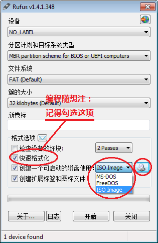
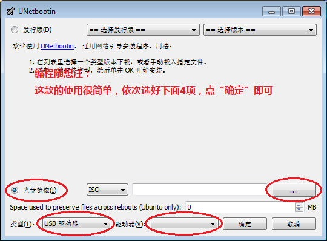
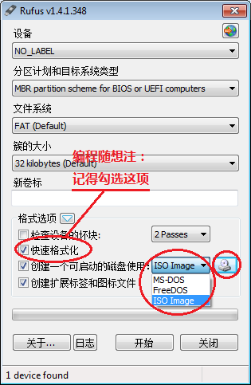
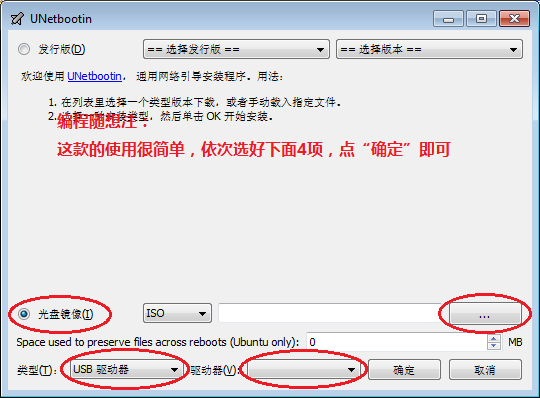

今天聊的这个话题属于老生常谈，这几年时常有读者来询问（现在有越来越多的电脑是无光驱的）。再加上俺后面要扫盲一些“特殊的 Linux 发行版”，到时候肯定又要涉及到制作可引导U盘的事情。所以，今天先单独发一篇教程，说说几种不同的搞法。
事先声明：
1. 本文针对的是U盘，而不是外置的USB硬盘。外置USB移动硬盘的操作方式稍有不同，如果很多人感兴趣，再另外写一篇教程）
2. 本文介绍的是“用U盘当安装盘”，而【不是】“安装系统到U盘”（这两者是完全不同滴！）
考虑到本文面向的读者，技术水平参差不齐。针对某些菜鸟读者，俺需要先解释一下基本概念。如果你自认为不是菜鸟，请略过“基本概念解释”，直接看后续章节。
所谓的“光盘镜像”其实是一个文件，可以用专门的刻录软件（再配合“可写光驱”），就可以把镜像文件刻录成光盘。
光盘镜像有好几种格式，目前最常见的是扩展名为“ISO”的格式（这个扩展名源自于 ISO 9660 标准）。大多数操作系统提供的光盘镜像文件，都是ISO格式的。
“可启动光盘”也称为“可引导光盘”（洋文叫“bootable”）。这类光盘插入光驱之后，如果你在 BIOS 中设置“光驱优先启动”，那么就可以用这种光盘启动电脑。
同样的，光盘镜像也分：可启动 和 不可启动 两种。比如某些存放视频/音乐的ISO就是不可启动的；而用来安装系统的镜像，必须是可启动的（显然嘛）。所以，如果你想制作可启动的U盘，前提是你用的光盘镜像本身是可启动的。
刚才说了：光盘镜像只是一个文件，不是物理光盘。所以你没法把它塞入物理光驱中，用虚拟光驱也不方便测试。俺建议用虚拟机软件测试。从来没听说过“虚拟机软件”的同学，可以先看之前的教程《扫盲操作系统虚拟机》。
测试方法如下：先建一个空的虚拟系统（Guest OS），在虚拟系统的“光驱”中设置你要测试的那个镜像文件，然后启动虚拟系统。如果能看到操作系统的相关画面，就说明启动成功；如果屏幕一片黑或者出现找不到系统的英文提示，就说明这个镜像无法启动（无法引导）。
对于可启动光盘，有一种模式称之为“Hybrid 模式”（混合模式）。这种模式的光盘，可以直接刻录成物理光盘，也可以直接制作成可引导的U盘。
如今越来越多的操作系统安装光盘采用“Hybrid 模式”，这就方便了大伙儿制作“可启动U盘”。另外，有些光盘虽然不是“Hybrid 模式”，但可以用工具转换成“Hybrid 模式”。
所谓的“通用做法”，就是说这类方法跟光盘内置的系统无关，适用于大多数的光盘镜像（可以是 Windows 系统盘，也可以是 Linux 系统盘，也可以是苹果的系统盘）。
但是，“通用方法”不等于“万能方法”。某些古老的系统（比如 Win2000、WinXP）用下列方法可能搞不定。针对这类老系统，需要使用专门的工具（考虑到老系统用得越来越少了，所以今天暂时不聊）。
今天介绍的这三种工具，应该可以搞定：
1. WIndows Vista 之后的安装盘（Vista、Win7、Win8）
2. 各种主流的 Linux 发行版（比如 Debian、Ubuntu、RedHat、CentOS、Fedora、等）
3. 苹果的安装盘
能够达到“通用”目的工具有不少。俺今天挑选3款【开源的】来介绍。为啥只挑选开源的？有如下几个讲究：
一来，俺本人比较偏好开源软件（纯属个人喜好）
二来，开源软件不但免费，而且无需注册码，也没有使用期限的限制（方便性）。
三来，相对闭源软件而言，开源比较让人放心（安全性）。
常看俺博客的同学应该都知道，俺是比较关注“安全性”的，所以再把第三点补充说明一下。
用光盘镜像制作可启动U盘，主要都是为了装系统。如果使用的制作工具本身不可靠（比如带木马），会导致你制作出来的启动U盘也不安全，进而导致你安装出来的系统不安全。
顺便再说一下：为啥俺【不】喜欢用 WinPE 类型的 U盘工具。
1. PE 方式的局限性——只能用于 Windows 系统（而现在有越来越多的网友开始玩 Linux 或 Mac OS）。
2. 很多 PE 工具是【国产滴】——而国产的 PE 工具总喜欢【夹带私货】。不要怨俺“崇洋”，实在是国产软件出了太多的流氓，用起来心里不踏实。
rufus 这款工具，知名度不太高，但用起来比较爽（界面的定制选项多，而且速度快）。它的官网在“这里”。
提醒一下：rufus 的 exe 文件带有【数字签名】，所以下载之后先验证数字签名是否有效（要养成这个好习惯）。不懂得验证数字签名的同学，请看《扫盲文件完整性校验——关于散列值和数字签名》
这玩意儿的界面截图如下：

它在刻录前会先格式化U盘，所以一定要记得勾选【快速格式化】。如果没勾选这项，它会进行“完全格式化”。现在的U盘动不动都有好几个GB，完全格式化要等很久。
UNetbootin 的官网在“这里”。主页开头就是三大平台（Windows、Linux、Mac OS X）的下载链接。
Windows 的界面截图如下：

这玩意儿的使用很简单，看俺截图上的标注应该就懂。
可能有些熟悉 Linux 的同学会质疑，Linux 的
俺来解释一下：本文之所以强调
假设你有一个 iso 镜像文件，路径是
假设你的 U盘对应的设备是
那么就可以用如下命令搞定：
大多数 Linux 发行版都内置了这个
dd 命令也被移植到 Windows 系统上。具体请到“这里”下载。页面比较长，前半段是帮助，你找“Downloads for dd”，就可以看到下载链接。
俺目前用的是 0.5 版本（截止俺写本文时，0.6 版本还是【beta】状态，不爽）。
Windows 下的 dd，其用法与 Linux 下差不多。唯一要留意的是——U盘的【设备路径】。
（通常U盘上只有一个分区）你插入 U盘 后，假如盘符是
如果你的 iso 镜像文件放在
总结一下上述三种方法的优缺点。
对于U盘制作工具，兼容性很重要。兼容性不好，可能导致刻录的U盘无法启动。
rufus 和 UNetbootin 的兼容性好于 dd。dd 的缺点在于：如果某个镜像本身不是 hybrid 模式（hybrid 的解释，本文开头已经说过），用 dd 刻录之后会【无法】启动。而 rufus 和 UNetbootin 可以在刻录U盘的时候进行相应的处理。
针对 dd 的这个缺点，有一个补救的办法：
对于 Linux/Unix 平台，先使用
至于 rufus 和 UNetbootin 的对比，俺个人觉得 rufus 不但优于 UNetbootin，而且也优于某些其它工具（比如 Universal USB Installer）。俺曾经碰到过：同一个ISO镜像，同一个物理U盘，用 UNetbootin 刻录后无法启动，而 rufus 刻录后可以启动。
dd 的速度最快（前面说了，dd 是【裸读写】，所以速度飞快）；
rufus 的速度比 UNetbootin 快（rufus 的官网界面上有几种不同工具的速度对比）
UNetbootin 和 rufus 差不多——都有傻瓜化的图形界面。
dd 易用性最差——必须得用命令行（这会难倒一大帮菜鸟）。
UNetbootin 好于 dd 好于 rufus（rufus 只有 Windows 版本）
提醒一下：
这里说的“跨平台”指的是工具自身，而不是制作出来的光盘。比如 rufus 虽然只有 Windows 版本，但 rufus 可以制作 Linux 的安装盘。
虽然俺折腾过一些系统，但接触面依然很有限。而且制作可引导U盘，依赖的因素很多（至少包括：BIOS 型号、U盘的牌子、光盘的类型、还有运气）。所以，非常欢迎大伙儿针对本文的内容，提出反馈（可以补充你的经验，或者你曾经碰到的问题）。
为了便于大伙儿相互交流，请到本文留言。
以下是读者反馈的汇总，供大伙儿参考（因为反馈信息比较多，俺未必能逐一验证，大伙儿自行判断）：
推荐两款工具
推荐“Universal USB installer”，可以做windows, Linux, Solaris等USB安装器
推荐“YUMI”，有上面的功能，另外又增加了一些功能。
UltraISO9.5.2_pe在windows下表现最好。注意，仅仅是UltraISO9.5.2_pe好用，其以后的版本不好用。
推荐“Win32 Disk Imager”
Hiren's BootCD搞电脑必备啊
raw 文件可以用 SUSE Studio ImageWriter
img 文件可以用 Win32 Disk Imager
在 Windows 下刻录U盘的时候，需要关闭某些杀毒软件。否则杀毒软件会拦截写入的启动文件，导致做出来的U无法启动。
“LinuxLive USB Creator”也不错，支持的系统很多。
补充一点rufus不如Unetbootin的地方，就是Unetbootin不仅支持对iso文件的刻录，而且可以用压缩的光盘镜像文件（isz文件）来刻录启动盘，而rufus好像没有这一功能。
俺博客上，和本文相关的帖子（需翻墙）：
《如何用【内置硬盘】全新安装 Windows 2000/XP/2003/Vista/2008/7/8（无需光驱和USB口）》
《扫盲操作系统虚拟机》（系列）
《扫盲文件完整性校验——关于散列值和数字签名》
事先声明：
1. 本文针对的是U盘，而不是外置的USB硬盘。外置USB移动硬盘的操作方式稍有不同，如果很多人感兴趣，再另外写一篇教程）
2. 本文介绍的是“用U盘当安装盘”，而【不是】“安装系统到U盘”（这两者是完全不同滴！）
★扫盲若干【基本概念】
考虑到本文面向的读者，技术水平参差不齐。针对某些菜鸟读者，俺需要先解释一下基本概念。如果你自认为不是菜鸟，请略过“基本概念解释”，直接看后续章节。
◇光盘镜像
所谓的“光盘镜像”其实是一个文件，可以用专门的刻录软件（再配合“可写光驱”），就可以把镜像文件刻录成光盘。
光盘镜像有好几种格式，目前最常见的是扩展名为“ISO”的格式（这个扩展名源自于 ISO 9660 标准）。大多数操作系统提供的光盘镜像文件，都是ISO格式的。
◇啥是“可启动的”光盘镜像？
“可启动光盘”也称为“可引导光盘”（洋文叫“bootable”）。这类光盘插入光驱之后，如果你在 BIOS 中设置“光驱优先启动”，那么就可以用这种光盘启动电脑。
同样的，光盘镜像也分：可启动 和 不可启动 两种。比如某些存放视频/音乐的ISO就是不可启动的；而用来安装系统的镜像，必须是可启动的（显然嘛）。所以，如果你想制作可启动的U盘，前提是你用的光盘镜像本身是可启动的。
◇如何判断光盘镜像是否可启动？
刚才说了：光盘镜像只是一个文件，不是物理光盘。所以你没法把它塞入物理光驱中，用虚拟光驱也不方便测试。俺建议用虚拟机软件测试。从来没听说过“虚拟机软件”的同学，可以先看之前的教程《扫盲操作系统虚拟机》。
测试方法如下：先建一个空的虚拟系统（Guest OS），在虚拟系统的“光驱”中设置你要测试的那个镜像文件，然后启动虚拟系统。如果能看到操作系统的相关画面，就说明启动成功；如果屏幕一片黑或者出现找不到系统的英文提示，就说明这个镜像无法启动（无法引导）。
◇Hybrid 模式
对于可启动光盘，有一种模式称之为“Hybrid 模式”（混合模式）。这种模式的光盘，可以直接刻录成物理光盘，也可以直接制作成可引导的U盘。
如今越来越多的操作系统安装光盘采用“Hybrid 模式”，这就方便了大伙儿制作“可启动U盘”。另外，有些光盘虽然不是“Hybrid 模式”，但可以用工具转换成“Hybrid 模式”。
★啥是【通用】制作方法？
所谓的“通用做法”，就是说这类方法跟光盘内置的系统无关，适用于大多数的光盘镜像（可以是 Windows 系统盘，也可以是 Linux 系统盘，也可以是苹果的系统盘）。
但是，“通用方法”不等于“万能方法”。某些古老的系统（比如 Win2000、WinXP）用下列方法可能搞不定。针对这类老系统，需要使用专门的工具（考虑到老系统用得越来越少了，所以今天暂时不聊）。
今天介绍的这三种工具，应该可以搞定：
1. WIndows Vista 之后的安装盘（Vista、Win7、Win8）
2. 各种主流的 Linux 发行版（比如 Debian、Ubuntu、RedHat、CentOS、Fedora、等）
3. 苹果的安装盘
★为啥选择这几款工具？
能够达到“通用”目的工具有不少。俺今天挑选3款【开源的】来介绍。为啥只挑选开源的？有如下几个讲究：
一来，俺本人比较偏好开源软件（纯属个人喜好）
二来，开源软件不但免费，而且无需注册码，也没有使用期限的限制（方便性）。
三来，相对闭源软件而言，开源比较让人放心（安全性）。
常看俺博客的同学应该都知道，俺是比较关注“安全性”的，所以再把第三点补充说明一下。
用光盘镜像制作可启动U盘，主要都是为了装系统。如果使用的制作工具本身不可靠（比如带木马），会导致你制作出来的启动U盘也不安全，进而导致你安装出来的系统不安全。
顺便再说一下：为啥俺【不】喜欢用 WinPE 类型的 U盘工具。
1. PE 方式的局限性——只能用于 Windows 系统（而现在有越来越多的网友开始玩 Linux 或 Mac OS）。
2. 很多 PE 工具是【国产滴】——而国产的 PE 工具总喜欢【夹带私货】。不要怨俺“崇洋”，实在是国产软件出了太多的流氓，用起来心里不踏实。
★rufus 的玩法（Windows 平台）
rufus 这款工具，知名度不太高，但用起来比较爽（界面的定制选项多，而且速度快）。它的官网在“这里”。
提醒一下：rufus 的 exe 文件带有【数字签名】，所以下载之后先验证数字签名是否有效（要养成这个好习惯）。不懂得验证数字签名的同学，请看《扫盲文件完整性校验——关于散列值和数字签名》
这玩意儿的界面截图如下：

它在刻录前会先格式化U盘，所以一定要记得勾选【快速格式化】。如果没勾选这项，它会进行“完全格式化”。现在的U盘动不动都有好几个GB，完全格式化要等很久。
★UNetbootin 的玩法（跨平台）
UNetbootin 的官网在“这里”。主页开头就是三大平台（Windows、Linux、Mac OS X）的下载链接。
Windows 的界面截图如下：

这玩意儿的使用很简单，看俺截图上的标注应该就懂。
★dd 的玩法（跨平台）
dd 是一个很有用的 Linux/Unix 命令，它可以用来进行设备之间的【裸读写】。所谓的“裸读写”就是——它不理睬文件系统，直接越过文件系统对物理设备进行读写。所以它可以干很多“拷贝命令”（copy or cp）无法干或不方便干的事情（比如：备份/恢复“硬盘主引导扇区”）。今天俺来聊聊如何用 dd 把光盘镜像刻录到 U盘。可能有些熟悉 Linux 的同学会质疑，Linux 的
cp 命令也可以用来刻录 iso 镜像。俺来解释一下：本文之所以强调
dd 命令，还考虑到 dd 有 Windows 的移植版本，而且它的 Windows 版本照样能把 ISO 镜像制作到 U盘。◇在 Linux/Unix 上的玩法
假设你有一个 iso 镜像文件，路径是
~/xxx.iso假设你的 U盘对应的设备是
/dev/sdb那么就可以用如下命令搞定：
dd bs=4M if=~/xxx.iso of=/dev/sdb稍微解释一下：
bs 参数表示每次批量读写 4MB 字节的数据（俺一般都用 4M，你也可以用 8M、2M 或 1M）。if 参数表示输入（文件/设备）的路径，在这里用的是光盘镜像文件。of 参数表示输出（文件/设备）的路径，在这里用的是U盘设备。大多数 Linux 发行版都内置了这个
dd 命令，所以一般情况下，你【无需】额外安装软件包就可以使用。执行完 dd 命令之后，要记得再执行一下 sync 命令同步磁盘缓存，再拔出U盘。◇在 Windows 上的玩法
dd 命令也被移植到 Windows 系统上。具体请到“这里”下载。页面比较长，前半段是帮助，你找“Downloads for dd”，就可以看到下载链接。
俺目前用的是 0.5 版本（截止俺写本文时，0.6 版本还是【beta】状态，不爽）。
Windows 下的 dd，其用法与 Linux 下差不多。唯一要留意的是——U盘的【设备路径】。
（通常U盘上只有一个分区）你插入 U盘 后，假如盘符是
F: 那么对应的设备路径就是 \\.\f:如果你的 iso 镜像文件放在
C:\xxx.iso 那么就用如下的 dd 命令把镜像刻录到 U盘dd bs=4M if=C:\xxx.iso of=\\.\f:（参数刚才解释过，这儿就不再罗嗦了）
★优缺点对比
总结一下上述三种方法的优缺点。
◇兼容性方面
对于U盘制作工具，兼容性很重要。兼容性不好，可能导致刻录的U盘无法启动。
rufus 和 UNetbootin 的兼容性好于 dd。dd 的缺点在于：如果某个镜像本身不是 hybrid 模式（hybrid 的解释，本文开头已经说过），用 dd 刻录之后会【无法】启动。而 rufus 和 UNetbootin 可以在刻录U盘的时候进行相应的处理。
针对 dd 的这个缺点，有一个补救的办法：
对于 Linux/Unix 平台，先使用
isohybrid 命令把 iso 镜像转换成 hybrid 模式（该命令来自于 SysLinux/ISOLinux 软件包）。假设你的光盘镜像位于 ～/xxx.iso 那么使用如下命令转换：（可惜该命令【没有】windows 版本）isohybrid ~/xxx.iso
至于 rufus 和 UNetbootin 的对比，俺个人觉得 rufus 不但优于 UNetbootin，而且也优于某些其它工具（比如 Universal USB Installer）。俺曾经碰到过：同一个ISO镜像，同一个物理U盘，用 UNetbootin 刻录后无法启动，而 rufus 刻录后可以启动。
◇速度方面
dd 的速度最快（前面说了，dd 是【裸读写】，所以速度飞快）；
rufus 的速度比 UNetbootin 快（rufus 的官网界面上有几种不同工具的速度对比）
◇易用性方面
UNetbootin 和 rufus 差不多——都有傻瓜化的图形界面。
dd 易用性最差——必须得用命令行（这会难倒一大帮菜鸟）。
◇跨平台方面
UNetbootin 好于 dd 好于 rufus（rufus 只有 Windows 版本）
提醒一下：
这里说的“跨平台”指的是工具自身，而不是制作出来的光盘。比如 rufus 虽然只有 Windows 版本，但 rufus 可以制作 Linux 的安装盘。
★读者反馈
虽然俺折腾过一些系统，但接触面依然很有限。而且制作可引导U盘，依赖的因素很多（至少包括：BIOS 型号、U盘的牌子、光盘的类型、还有运气）。所以，非常欢迎大伙儿针对本文的内容，提出反馈（可以补充你的经验，或者你曾经碰到的问题）。
为了便于大伙儿相互交流，请到本文留言。
以下是读者反馈的汇总，供大伙儿参考（因为反馈信息比较多，俺未必能逐一验证，大伙儿自行判断）：
◇1楼的网友
推荐两款工具
推荐“Universal USB installer”，可以做windows, Linux, Solaris等USB安装器
推荐“YUMI”，有上面的功能，另外又增加了一些功能。
◇2楼的网友
UltraISO9.5.2_pe在windows下表现最好。注意，仅仅是UltraISO9.5.2_pe好用，其以后的版本不好用。
◇3楼的网友
推荐“Win32 Disk Imager”
◇5楼2单元的网友
Hiren's BootCD搞电脑必备啊
◇6楼的网友
raw 文件可以用 SUSE Studio ImageWriter
img 文件可以用 Win32 Disk Imager
◇11楼的网友
在 Windows 下刻录U盘的时候，需要关闭某些杀毒软件。否则杀毒软件会拦截写入的启动文件，导致做出来的U无法启动。
◇26楼的网友
“LinuxLive USB Creator”也不错，支持的系统很多。
◇33楼的网友
补充一点rufus不如Unetbootin的地方，就是Unetbootin不仅支持对iso文件的刻录，而且可以用压缩的光盘镜像文件（isz文件）来刻录启动盘，而rufus好像没有这一功能。
俺博客上，和本文相关的帖子（需翻墙）：
《如何用【内置硬盘】全新安装 Windows 2000/XP/2003/Vista/2008/7/8（无需光驱和USB口）》
《扫盲操作系统虚拟机》（系列）
《扫盲文件完整性校验——关于散列值和数字签名》
版权声明
本博客所有的原创文章，作者皆保留版权。转载必须包含本声明，保持本文完整，并以超链接形式注明作者编程随想和本文原始地址：
https://program-think.blogspot.com/2013/12/create-bootable-usb-stick-from-iso.html
本博客所有的原创文章，作者皆保留版权。转载必须包含本声明，保持本文完整，并以超链接形式注明作者编程随想和本文原始地址：
https://program-think.blogspot.com/2013/12/create-bootable-usb-stick-from-iso.html